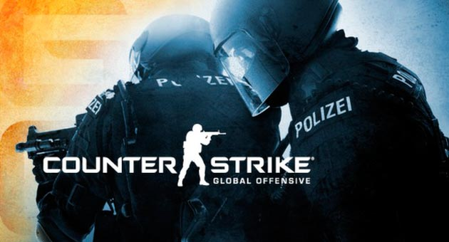

Què és Counter-Strike 2?
Counter-Strike 2 (conegut públicament com a CS GO) és un videojoc de trets en primera persona multijugador (sigui en LAN o en línia) desenvolupat per Valve per a Microsoft Windows. És una modificació completa del joc Half-Life, realitzada per Minh Li i Jess Cliffe, els qui van llançar la primera versió el 18 de juny de 1999. El joc té dos equips que et permeten tenir una bona experiència en el joc, aquests són els antiterroristes i terroristes, els antiterroristes disposen de quatre equips jugables: SAS,SEAL,GSG9 i GIGN el seu objectiu principal en el joc és acabar amb l'enemic (Terroristes) així com rescatar ostatges, evitar que plantin un explosiu i en cas que ja hagi estat plantat, desactivar el mateix.
